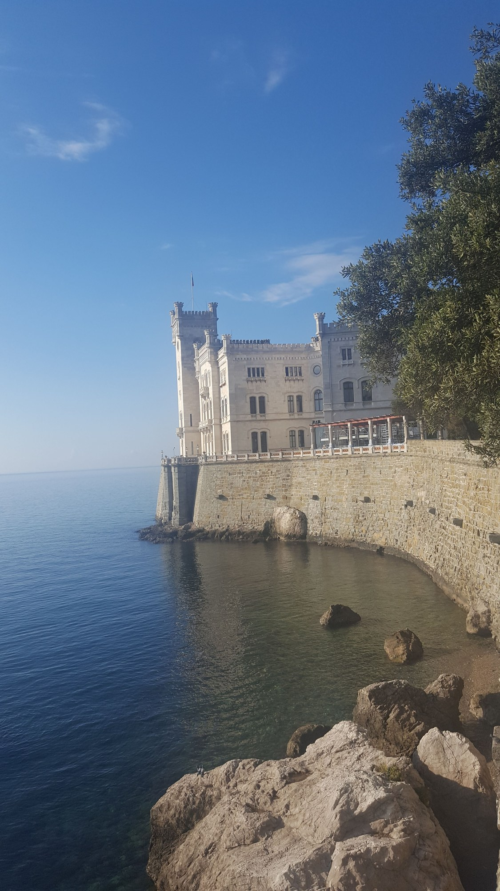
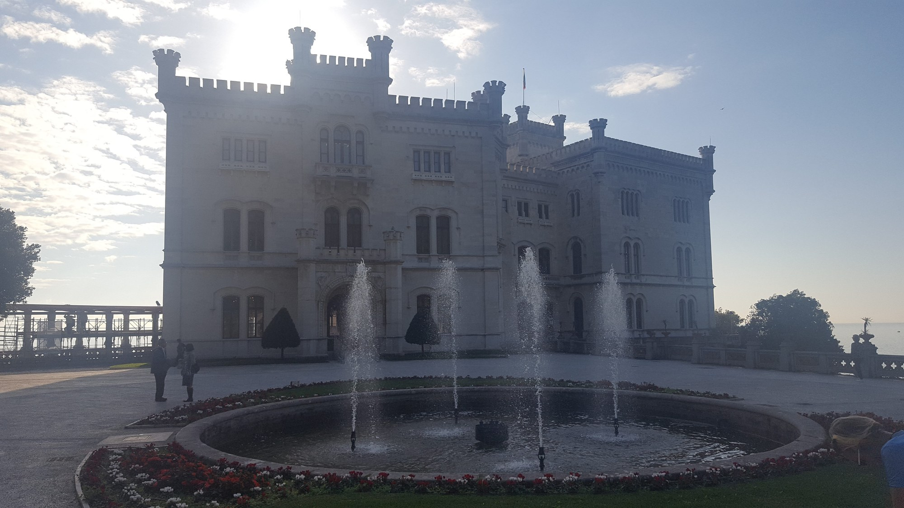

Sever Itálie — jezera, Milán a Miramare
Od Milána a jezera Garda k bílému zámku Miramare u Terstu. Fotografie z různých zastávek na severu Itálie.
Pár slov
Severní Itálie zahrnuje více regionů. Milán a Bergamo leží v Lombardii; Lago di Garda zasahuje také do Benátska a Trentina v regionu Trentino-Alto Adige. Kolem jezera najdeš Rivu del Garda, Sirmione, Gardu, Bardolino i Malcesine. Tady jsou moje fotografie z měst, údolí a jezer.
Sever — různá místa
Výběr fotografií ze severní Itálie: města, údolí a jezera. Nejsou jen z Lombardie — Maranello a Modena (muzea Ferrari) patří do Emilie-Romagny, Turín (Juventus Museum, Allianz Stadium) do Piemontu. (21 fotografií)


Zobrazit všechny fotografie (21)Zobrazit méně


Milán
Duomo, Galleria Vittorio Emanuele II a divadlo La Scala patří k hlavním památkám města. (5 fotografií)


Zobrazit všechny fotografie (5)Zobrazit méně


Lago di Garda
Největší italské jezero. Jeho břehy leží v Lombardii, Benátsku a Trentinu, tedy v regionu Trentino-Alto Adige. (3 fotografie)


Miramare u Terstu
Bílý zámek nad mořem a pohled ze zahrady. Listopad 2018.


Zdroje a aktuální informace
Osobní fotografie zachycují dřívější cesty. Před návštěvou ověř aktuální vstup, rezervace a místní omezení.